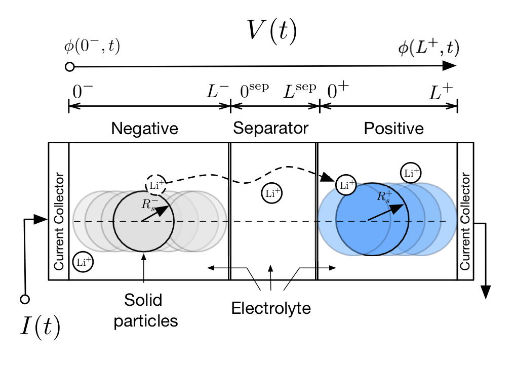
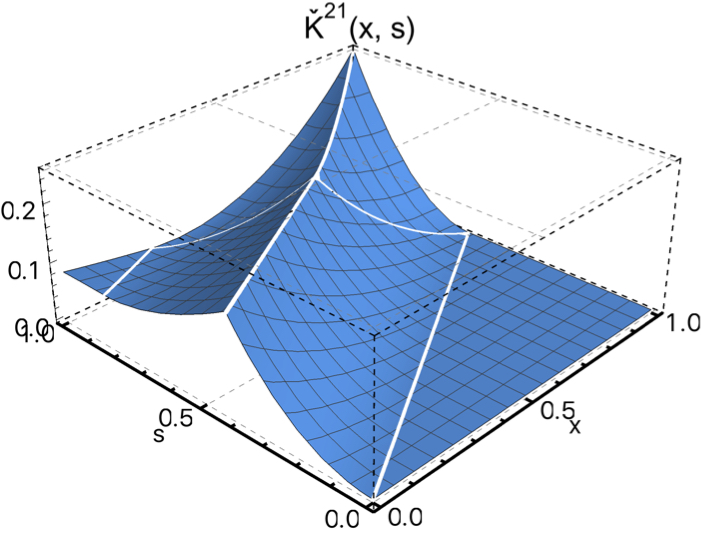
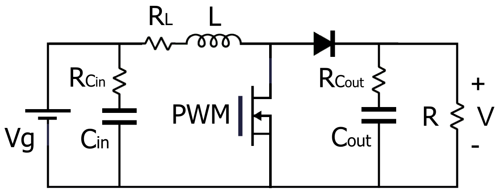
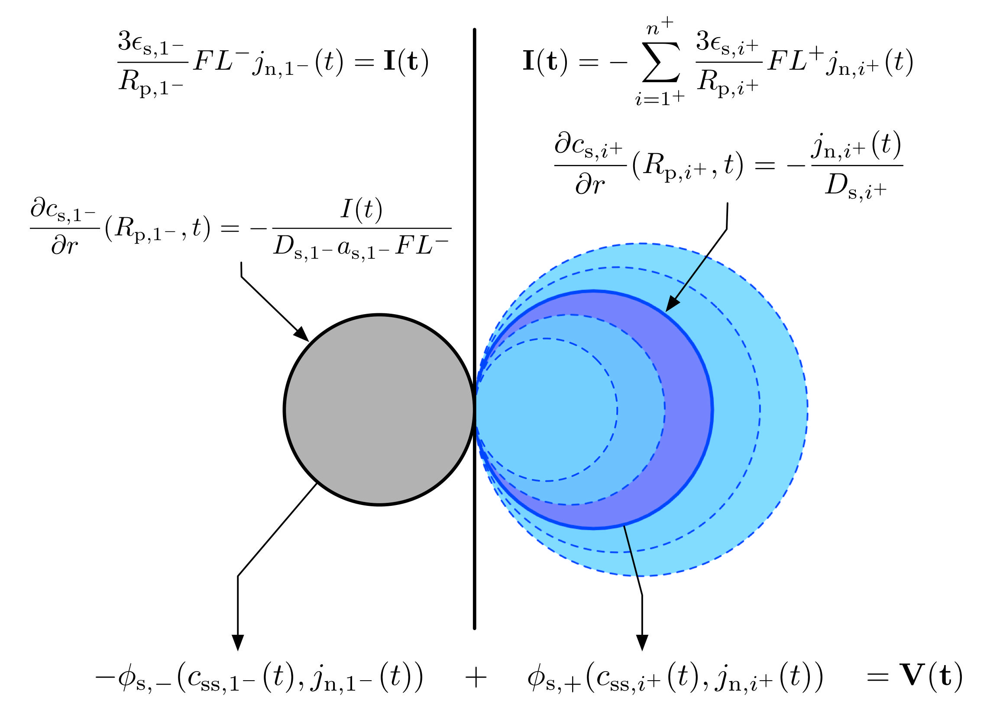
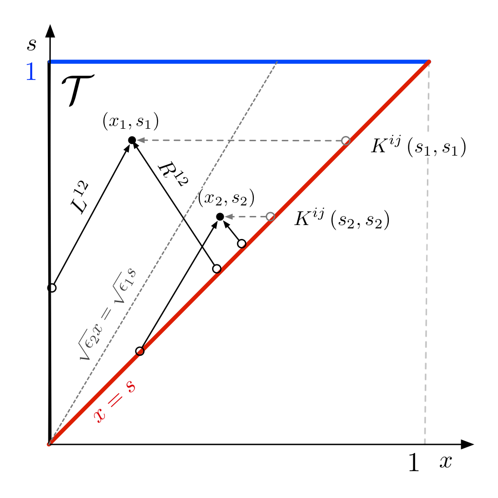
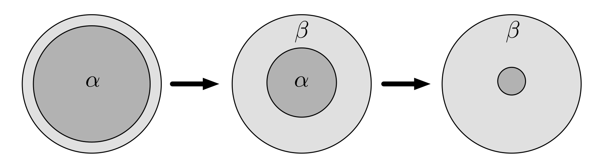
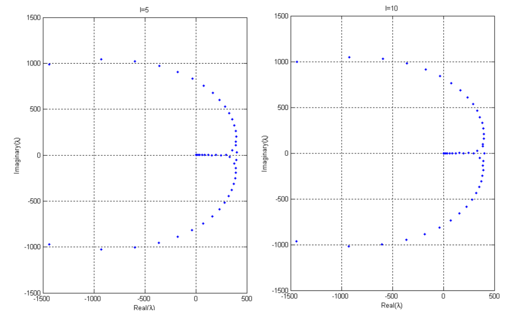

2014-2019 | Center for Control Systems and Dynamics, UC San Diego
Graduate Student Researcher
Advisor
Miroslav Krstic
2018 | MINES Paristech, Centre Automatique et Systèmes
Visiting Student
Advisor
Florent Di Meglio
2017 | University of California, Berkeley. Energy, Controls and Applications Lab
Visiting Student
Advisor
Scott Moura
2014 | CINVESTAV, Mathematics Department
Research Assistant
Advisor
Vladislav V. Kravchenko
2014 | Tecnológico de Monterrey. Mechatronics Department
Research Assistant
Aaron Sariñana Toledo
Education
2019 | Ph.D. in Dynamic Systems and Control
Mechanical and Aerospace Engineering
University of California, San Diego
Advisor
Miroslav Krstic
GPA 4.0/4.0
2016 | G.C. in Electric Drivetrain Technology
University of Colorado, Colorado Springs and Boulder
GPA 4.0/4.0
2015 | M.S. in Dynamic Systems and Control
University of California, San Diego
GPA 4.0/4.0
2014 | B.S. in Mechatronics Engineering
Tecnologico de Monterrey
GPA 97/100
1. L. Camacho-Solorio, State Estimation for
Reaction-Diffusion Equations with Applications to Lithium-Ion Batteries , 2019.
[PDF]
Journals
1. S. Tang, L. Camacho-Solorio, Yebin Wang and M. Krstic,
"State-of-Charge Estimation from a Thermal-Electrochemical Model of Lithium-Ion Batteries" ,
Automatica, Vol. 83, pp. 206-219, 2017

2. L. Camacho-Solorio, Rafael Vazquez and M. Krstic,
"Boundary Observers for Coupled Diffusion-Reaction Systems with Prescribed Convergence Rate ",
In preparation

Conferences
1. L. Camacho-Solorio and A. Sarinana-Toledo
'I-LQG control of DC-DC boost converters',
International Conference on Electrical Engineering, Computing Science and Automatic Control (CCE), 2014.

2. L. Camacho-Solorio , R. Klein, A. Mirtabatabaei, M. Krstic and S. Moura,
"State Estimation for an Electrochemical Model of Multiple Material Lithium- Ion Batteries" ,
ASME Dynamic Systems and Control Conference (DSCC), 2016.
[slides]

3. L. Camacho-Solorio, R. Vazquez and M. Krstic, "Boundary observer design for coupled reaction-diffusion systems with spatially-varying coefficients"
, American Control Conference (ACC), 2017.
[slides]
`
4. S. Koga, L. Camacho-Solorio, and M. Krstic "State Estimation for Lithium-Ion Batteries with Phase Transition
Materials" , ASME Dynamic Systems and Control Conference(DSCC), 2017.

5. L. Camacho-Solorio , S. Moura and M. Krstic,
"Robustness of Boundary Observers for Radial Diffusion Equations to Parameter Uncertainty"
, American Control Conference (ACC), 2018.
6. L. Camacho-Solorio and M. Krstic, "Boundary Observers for the Expected Value of a Randomly Switching Reaction-Diffusion PDE"
,
Conference on Decision and Control (CDC) 2018.
7. L. Camacho-Solorio , N. Velmurugan, F. Di Meglio and M. Krstic,
"Observer Design for a Coupled ODE-PDE System from a Wellbore Reservoir Drilling Model" ,
submitted.
Talks
1. L. Camacho-Solorio , "Spectral Parameter Power Series for complex PT-Symmetric Sturm-Liouville problems",
Undergraduate Research Project, CINVESTAV, 2014

2. S. Tang, L. Camacho-Solorio , Y. Wang, M. Krstic,
"State-of-Charge Estimation of Lithium-ion Batteries Modeled by a Coupled PDE-ODE System",
SIAM Conference on Control and Its Applications (CT17), 2017
[slides]
3. L. Camacho-Solorio , R. Vazquez and M. Krstic,
"Boundary Observers for Coupled Reaction-Diffusion Systems with Applications to Lithium-ion Batteries",
SIAM Conference on Control and Its Applications (CT17), 2017
[slides]
4. L. Camacho-Solorio , S. Moura and M. Krstic,
"Boundary Observer Design for Radial Diffusion-Reaction Equations in the Presence of Measurement Noise", 33th Southern California Control Workshop, 2017
[slides] [video file]